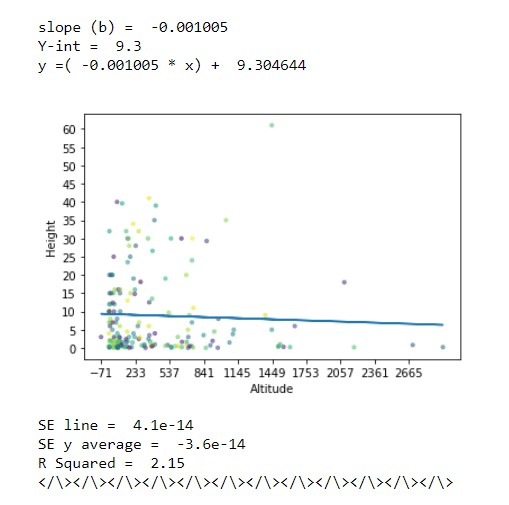
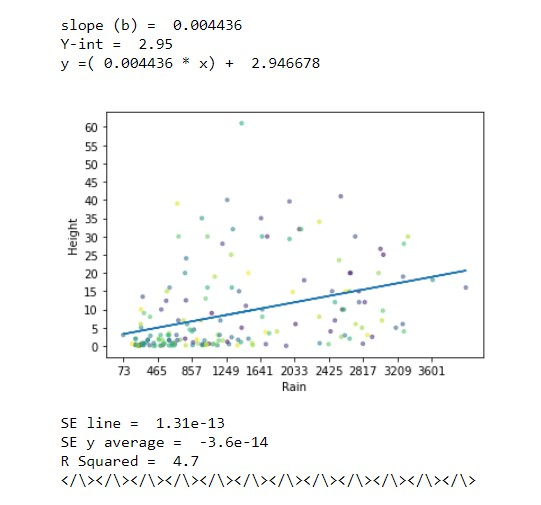
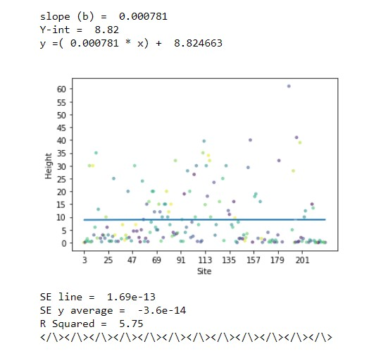
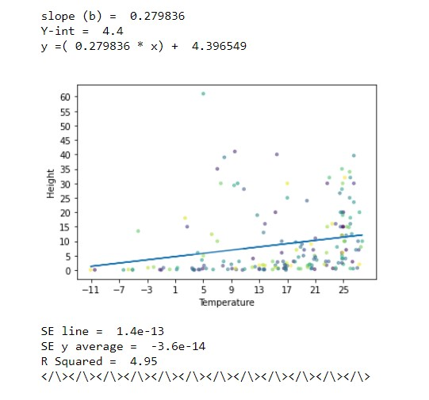

Regression is the means of estimating relationships of variables given a certain data set. This creates a better understanding of how variables change in relation to the other variables observed in the data. This also allows us to see an estimate of how these variables are related and how other factors may have an effect on the data. We can then distinguish the strength of the relationship between these variables.
We select the independent variable 'height' to compare to several other variables (Temperature, rain, site number, altitude) followed by computing the slope and y intercept for each variable, making average calculations, finding the line of best fit, standard error and finally the R squared which gives us the strength of the relationship. The strength of the relationship is calculated based on the average value for the dependent variable compared to the line of best fit. The smaller the value, the greater the relation.
After making these calculations, we graph the point for each and find the line of best fit and graphing it all to visualize these results for each of the dependent variables against the independent variable.     These show how close each point is to the line of best fit, underneath each graph is the calculation we can do to compare the average values for each category to show each relationship strength.